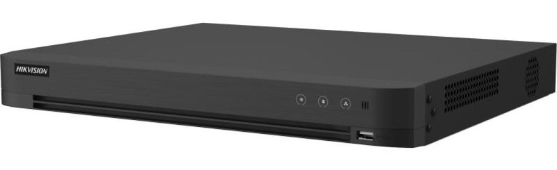

كل المنتجات ← كاميرات وأجهزة هيكفيجن
الموديل: iDS-7208HUHI-M2/XT

| الماركة | هيكفيجن |
|---|---|
| الموديل | iDS-7208HUHI-M2/XT |
| نوع المنتج | جهاز تسجيل DVR |
| الحماية المحيطية | |
| تحليل الأشخاص والمركبات | Up to 8 قنوات (advanced model) |
| كشف الوجوه | |
| كشف والتقاط الوجوه | كشف صور الوجوه، البحث في صور الوجوه؛ التقاط الوجوه حتى 4 قنوات |
| التعرف على الأهداف | |
| مكتبة صور الوجوه | Up to 16 face picture libraries; HDD damage will not cause data loss in the face picture library, because the library has been backed up by HDD and flash. |
| مقارنة صور الوجوه | 4 قنوات face picture comparison alarm (HD analog camera) |
| كشف الحركة 2.0 | |
| تحليل الأشخاص والمركبات | كشف الحركة 2.0 المعتمد على التعلم العميق مفعّل افتراضيا لكل القنوات التناظرية، ويصنف الأشخاص والمركبات ويقلل الإنذارات الكاذبة من الأجسام مثل الأوراق والأضواء؛ ويدعم البحث السريع حسب الهدف أو نوع الحدث؛ |
| الفيديو والصوت | |
| مدخلات فيديو IP | 8 قنوات (up to 16 قنوات), each up to 8MP |
| مدخل الفيديو التناظري | 8 قنوات BNC interface (1.0 Vp-p, 75 Ω), supporting coaxitron connection |
| مخرج HDMI | قناة واحدة, 4K (3840 × 2160)/30Hz, 2K (2560 × 1440)/60Hz, 1920 × 1080/60Hz, 1280 × 1024/60Hz, 1280 × 720/60Hz HDMI/VGA simultaneous output |
| مخرج VGA | قناة واحدة, 1920 × 1080/60Hz, 1280 × 1024/60Hz, 1280 × 720/60Hz HDMI/VGA simultaneous output |
| مدخل CVBS | PAL/NTSC |
| مخرج CVBS | قناة واحدة، BNC (1.0 فولت قمة لقمة، 75 أوم)، الدقة: PAL: 704 × 576، NTSC: 704 × 480 |
| التشغيل المتزامن | 8 قنوات |
| مدخل HDTVI | 8 MP(3840 × 2160)@12/15 fps, 3K(2960 x 1665)@25/20 fps,3K(3328x1504)@20fps,2K(2304x1296)@20fps,5 MP(2560 × 1944)@20 fps, 4 MP(2560 × 1440)@25/30 fps,1080P@25/30 fps, 720P@25/30fps |
| مدخل AHD | 5 MP(2560 × 1944)@20 fps, 4 MP(2560 × 1440)@25/30 fps,1080P@25/30 fps, 720P@25/30fps |
| مدخل HDCVI | 8 MP(3840 × 2160)@12/15 fps, 3K(2880×1620)@20/25 fps, 5 MP(2592 × 1944)@20 fps, 4 MP(2560 × 1440)@25/30 fps,1080P@25/30 fps, 720P@25/30fps |
| مخرج الصوت | قناة واحدة، RCA (خطي، 1 كيلوأوم) |
| مدخل الصوت | قناة واحدة(up to 8 قنوات is اختياري), RCA (2.0 Vp-p, 1 KΩ), 8 قنوات via coaxial cable |
| صوت ثنائي الاتجاه | قناة واحدة، RCA (2.0 فولت قمة لقمة، 1 كيلوأوم) (باستخدام مدخل الصوت الأول) |
| التسجيل | |
| ضغط الفيديو | H.265 Pro+/H.265 Pro/H.265/H.264+/H.264 |
| دقة الترميز | 8 MP/5 MP/3K/4 MP/3 MP/1080p/720p/WD1/4CIF/VGA/CIF |
| معدل الإطارات | Main stream: 8 MP@8 fps/3K@12 fps/5 MP@12 fps/4 MP@15 fps/8 MP Lite@15 fps/3 MP@18 fps 1080p/720p/WD1/4CIF/VGA/CIF@25 fps (P)/30 fps (N) Sub-stream: WD1/4CIF/CIF@25 fps (P)/30 fps (N) |
| معدل بت الفيديو | 32 Kbps to 10 Mbps |
| بث مزدوج | يدعم البث الرئيسي أو الفرعي |
| نوع البث | فيديو، فيديو وصوت |
| ضغط الصوت | G.711u |
| معدل بت الصوت | 64 Kbps |
| فك الترميز | |
| قدرة فك الترميز | حتى 24 قناة بدقة 1080P بمعدل 30 إطار/ث |
| الشبكة | |
| إجمالي النطاق | 256 Mbps |
| بروتوكول الشبكة | TCP/IP, PPPoE, DHCP, Hik-Connect, DNS, DDNS, NTP, SADP, NFS, iSCSI, UPnP™, HTTPS, ONVIF, ISUP |
| الاتصال عن بعد | 64 |
| واجهة الشبكة | 1, RJ45 10M/100M/1000M self-adaptive Ethernet interface |
| الواجهات المساعدة | |
| منفذ SATA | 2 SATA interface |
| السعة | حتى 12 TB capacity for each disk |
| المنفذ التسلسلي | RS-485 (نصف ثنائي الاتجاه) |
| منفذ USB | Front panel: 1 × USB 2.0; Rear panel: 2 × USB 3.0 |
| مدخل/مخرج الإنذار | غير متاح (اختياري) |
| عام | |
| مصدر الطاقة | 12 VDC, 3.3 A |
| الاستهلاك | ≤ 40 W |
| حرارة التشغيل | من -10 °C إلى 55 °C (من 14 °F إلى 131 °F) |
| رطوبة التشغيل | من 10% إلى 90% |
| الأبعاد (عرض × عمق × ارتفاع) | 384 × 317 × 52 مم (15.1 × 12.5 × 2.0 inch) |